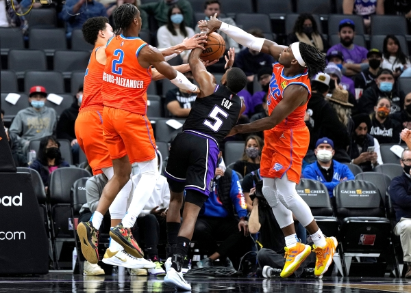

Team Offense and Defense
Professional Basketball is a team sport where two teams must execute both offense and defense to win the game. The recent NBA data shows that using high IQ strategies to increase offensive efficiency actually helps teams win more often than focusing on defense, especially when playing at home. On the other hand, when teams focus on defense, the main goal is to limit the opponent's scoring by using high-IQ defensive strategies that lower their shooting percentage and commit errors, this is more effective for winning than just getting rebounds or forcing them to turn the ball over.
Source: Golden Hoops Video
Team Offense Strategies
Motion Offense
A Motion Offense in basketball is an offensive strategy that focuses on smart constant movements of players, smart spacing, and sharing the ball rather than relying on set plays or ISO plays. The goal is to generate opportunities such as open shots, high-quality shots, and controlled pacing by using quick passes, off-ball movement, and screens to confuse and break down the defense.
The 5 out motion is for teams with 5 players that can play on the perimeter and will play with no post player.
Source: Basketball Orbit
Defensive Strategies
Defense wins championships. A cliche and arguably the truth for all basketball clubs. According to Triple Threat Basketball, basketball is not all about scoring or best offensive sets. Excellent defense generates easy offensive opportunities for teams. Great defense results in turnovers, low-percentage shots, and even high-pressure game for opponents or other teams. With that said, organized and structured team defense creates better pacing, offensive opportunities, and especially championships.

OKC's Mastery in Defense: They play gap defense, zone, and trap defense.
| Program | Skill Level | Focus | Duration |
|---|---|---|---|
| Beginner | New Players | Fundamentals: dribbling, shooting, basic defense | 4 Weeks |
| Intermediate | Some Experience | Advanced shooting, defensive skills, conditioning | 6 Weeks |
| Advanced | Skilled Players | Competitive play, teamwork, game strategy | 8 Weeks |
| For Teams | Teams / Clubs | Team drills, tactics, tournament preparation | Custom / Variable |